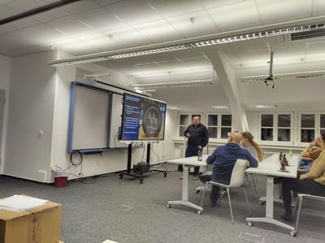
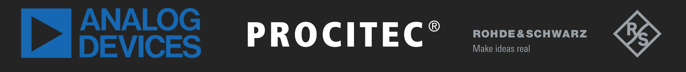

ISIC 2022 - Finale
{kind=link}
Vergangene Woche ist die 7. IEEE Signal Intelligence Challenge zu Ende gegangen. Nach einem turbulenten Endspurt um die Plätze 2 & 3 hat sich folgende Reihenfolge ergeben: Platz 1 ging wohlverdient an das Team "Die Schlaflosen" mit 2516 Punkten. Mit einem Paukenschlag hat es dieses Team geschafft jede ihnen gestellte Challenge zu lösen! Die Plätze zwei und drei haben sich die Teams "Die Transformierten Fourien" mit 1655 Punkten und "Kein Plan" mit 1545 Punkten aufgeteilt.
Die Siegerehrung fand wie gewohnt im Rahmen des Thanksgiving Events statt. Die Teilnehmer konnten einem höchst spannenden Fachvortrag von Dr. Nico Otterbach von der Firma Rohde & Schwarz zum Thema "Sichere Kommunikation auf SDR-Basis" lauschen. Wir sind sehr froh, dass uns der CEL und KIT Alumnus mit einem Einblick in den spannenden Alltag der sicheren Kommunikationstechnik beehrt hat und hoffen, dass auch die diesjährigen Teilnehmer der ISIC etwas davon mitnehmen konnten.
{kind=link}
Im Anschluss wurden die Preise an die Sieger vergeben. Platz 1 & 2 erhielten ein SDR, das uns dankenswerterweise von der Firma Analog Devices bereitgestellt wurde, und zwar einen "ADALM-PLUTO", damit können die Teilnehmer nun auch außerhalb der ISIC mit "echten" Signalen experimentieren und ihre Kenntnisse aus dem Studium erweitern. Weiterhin erhielten die Plätze 1 bis 3 noch Raspberry PI PC-400 KITs, die uns von der Firma Rohde & Schwarz bereit gestellt wurden, für allerhand spaßigen Programmier- und Entwicklungsprojekte. Alle teilnehmenden Teams erhielten Gutscheine fürs Vogelbräu, die aus der finanziellen Unterstützung der Firma Procitec.
Wir möchten uns nochmals recht herzlich bei unseren Sponsoren Rohde & Schwarz, Analog Devices und Procitec für die Unterstützung bedanken!
Finale Punktetabelle:
| Team | 1.1 | 1.2 | 2.1 | 2.2 | 2.3 | 2.4 | 3.1 | 4.1 | 4.2 | 5.1 | 5.2 | 6.1 | 6.2 | 6.3 | 7.1 | 7.2 | 8.1 | 8.2 | 9.1 | 10.1 | 10.2 | 10.3 | 11.1 | 11.2 | Gesamtpunkte |
|---|---|---|---|---|---|---|---|---|---|---|---|---|---|---|---|---|---|---|---|---|---|---|---|---|---|
| Die Schlaflosen | 104 | 105 | 105 | 104 | 105 | 105 | 104 | 105 | 105 | 105 | 105 | 105 | 105 | 105 | 105 | 105 | 105 | 105 | 105 | 105 | 105 | 105 | 104 | 105 | 2516 |
| Die Transformierten Fourien | 105 | 103 | 103 | 103 | 103 | 104 | 103 | 104 | 104 | 104 | 103 | 103 | 103 | 103 | 103 | 104 | 1655 | ||||||||
| Kein Plan | 101 | 102 | 102 | 101 | 104 | 104 | 102 | 102 | 103 | 104 | 104 | 104 | 104 | 103 | 105 | 1545 | |||||||||
| Space Girls | 102 | 102 | 101 | 101 | 102 | 103 | 103 | 104 | 818 | ||||||||||||||||
| DopplerDemons | 103 | 104 | 104 | 105 | 104 | 105 | 101 | 726 | |||||||||||||||||
| BasicBaseBandBitches | 0 |